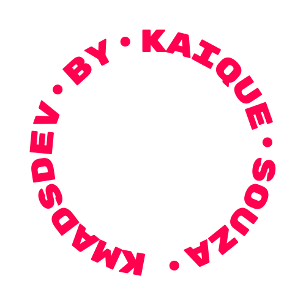
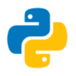
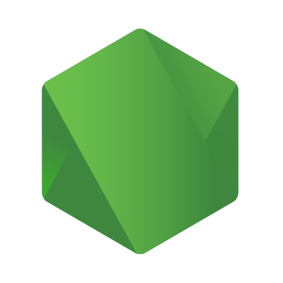
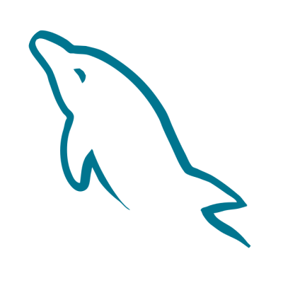
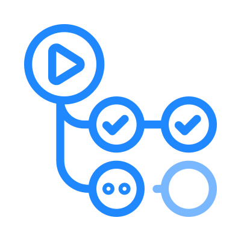

kmads.dev — Design System
Single source of truth for the look, feel, and rules behind kmads.dev and every project routed under it. Tokens mirror src/styles/global.css and src/constants.js; components are rendered live from the same CSS.
01 · Brand identity
kmads.dev is the public-facing brand of Kaique Souza (alias Kmads) — a one-person studio shipping outstanding, reliable, free software since 2018. The portfolio site doubles as a domain gateway: every owned project is reachable at kmads.dev/<project>.
Brand pillars
- Reliable. Tools that stay free and keep working.
- Direct. Engineer voice — no marketing fluff, no jargon for jargon's sake.
- Open. Open-source by default, public roadmaps, public learning.
- Self-hosted look. Dark UI, monospace accents, hot-pink highlight — no SaaS-template feel.
Naming conventions
- Brand name:
kmads.dev(always lowercase, with the dot — never "Kmads.dev" or "KMADS.DEV"). - Person:
Kaique Souza· aliasKmads(capitalized when used as a name). - GitHub org / handle:
kmadsdev(no dot). - Project URLs:
kmads.dev/<project-slug>(kebab-case, lowercase).



02 · Color
5-color palette. Dark by default. Pink (--special-color) is the only accent — never introduce a 6th hue.
Derivative tints / overlays
rgba(255, 1, 79, 0.1)— tag chip background.rgba(255, 1, 79, 0.7)— gradient stop on section dividers.rgba(255, 255, 255, 0.06)— card border resting state.rgba(255, 255, 255, 0.05)— scroll track background.rgba(255, 255, 255, 0.01)+backdrop-filter: blur(40px)— fixed header.
Off-palette colors — found in the wild
Found auditing src/styles/: three solid hex values that don't trace back to the palette above or its derivative tints. Each has a clear, narrow job — not necessarily wrong — but undocumented means the next edit reaches for a guess instead of a token.
#ff1a5c—Experience.css:73. Hover tint on the experience-rail scrollbar thumb, written asvar(--special-color-hover, #ff1a5c)— the variable is referenced but never declared in:root, so the fallback always wins.#ececec—Hero.css:44. Color of.hero-subtitle, the single-line tagline under the hero name. Softer than--white, cooler than--text-gray— its own thing.#1a1a1a—Projects.css:155. Background of.project-media-wrapper, the letterbox behind project cover media — a half-step between--bg-colorand--secondary-color.
Going forward: a new color earns a token in :root first, referenced via var(--name) — never a bare hex inside a component file. These three predate that discipline; formalize --special-color-hover (it's already being called for) or fold the other two into their nearest-neighbor token next time those files are touched.
03 · Typography
Single typeface — Rubik (Google Fonts), weights 300–900. Loaded via <link> in index.html / projects.html. Body line-height 1.6. Never mix in a second font family.
Special treatment — gradient title
Hero title uses pink as a clipped background-image on text. Reserved for the hero only. Do not apply to section titles or buttons.
background: var(--special-color); -webkit-background-clip: text; background-clip: text; -webkit-text-fill-color: transparent;
04 · Spacing & radius
Spacing scale (rem)
Section vertical padding: 4rem 0 2rem on desktop, 3rem 0 2rem at ≤768px, 2rem 0 1.5rem at ≤480px.
Radius scale
- 5px — primary CTA buttons, social icons.
- 8px — ghost buttons, sponsor button, footer social icons.
- 20px — every card (experience, skill, project, section divider, view-more).
- 25px / pill — header "Hire" button.
- circle — project hover overlay icon, brand mark.
05 · Motion & easing
All interactive transitions use one of four easing tokens. Standard duration: 0.3s for hover / state, 0.4s for cards, 0.6–0.8s for reveals, 20s for the hero badge spin.
--ease-out-expocubic-bezier(0.19, 1, 0.22, 1)
--ease-out-quartcubic-bezier(0.25, 1, 0.5, 1)
--ease-in-out-quartcubic-bezier(0.76, 0, 0.24, 1)
card-hovercubic-bezier(0.25, 0.46, 0.45, 0.94)
Standard reveal
.fade-in { opacity: 0; transform: translateY(30px); animation: fadeInUp 0.8s var(--ease-out-expo) forwards; }
.fade-in-delay-1 { animation-delay: 0.1s; }
/* …delay-2..5 in 0.1s steps */
Card hover (canonical)
- Lift:
translateY(-8px)(cards) ·translateY(-12px) scale(1.05)(skill cards) ·translateY(-2px)(buttons). - Border: resting
rgba(255,255,255,0.06)→ hovervar(--special-color). - Shadow:
0 30px 60px rgba(0,0,0,0.3). - Inner image:
scale(1.08)on project card ·scale(1.15)on skill icon.
Smooth scroll
Page scroll handled by Lenis (useLenis.jsx). Native scroll-behavior is set to auto so Lenis owns it. Defaults: lerp 0.075, wheelMultiplier 0.8, touchMultiplier 0.5.
06 · Surfaces & patterns
Radial dot grid (hero background)
background: radial-gradient(circle, rgba(255,255,255,0.15) 5%, transparent 15%) repeat; background-size: 30px 30px; background-color: var(--bg-color);
Signature pattern
30×30 px radial dots @ 15% white, on bg.
Pink gradient (section dividers, accent surfaces)
background: linear-gradient(135deg, var(--special-color) 0%, rgba(255,1,79,0.7) 100%);
Glass / blur
Two real usages, both leaning on backdrop-filter rather than a flat translucent fill — the blur is what sells "glass," not the tint. Watch the checker blur behind the panel below.
/* Header.css — sticky bar: near-invisible tint, heavy blur */ background: rgba(255, 255, 255, 0.01); backdrop-filter: blur(40px); /* Projects.css — card hover overlay: lighter blur, legible over media */ backdrop-filter: blur(10px);
Color glow accents
Pink shows up as soft glow in exactly two interaction states — tight radius, low opacity, always a halo rather than a hard drop shadow.
0 0 0 2px rgba(255, 1, 79, 0.1)—Contact.css:53. Focus ring on form inputs/textareas, paired with a solid--special-colorborder. A halo, not a shadow.0 10px 30px rgba(255, 1, 79, 0.3)—Contact.css:81. Submit-button hover, paired withtranslateY(-3px)— the lift "throws" the glow downward.
09 · Cards
Skill card
180×180, large icon (125×125), tooltip-style name on hover.

Experience card
Min 420px wide, 320 tall. Header row = company + period/badge. Body = bullet list w/ pink dot markers.
- Allocated on the Engineering Squad (IT Corp / HR Division).
- Working on Project Survey — internal platform replacing third-party tools.
- Centralizes survey management; expected multi-million annual savings.
Project card
Image (200–260px tall) on top, content below. Hover lifts + reveals link button overlay.
View-more card
Dashed pink border, gradient pink-tinted bg. Closes every horizontal track.
10 · Section dividers
Pink gradient cards that open every horizontal-scroll track. Always carry: eyebrow label, title, count digit (semi-transparent white in bottom-right).
Experience
Stack
Projects
11 · Header
Fixed, full-width, glassy. Logo (pink, lowercase brand) on the left, nav links + "Hire" pill on the right. Underline animates on hover. Hidden nav menu at ≤768px (no hamburger in the current build — TBD).
12 · Hero
Two-column grid (1fr 1fr): copy block left, spinning badge right. Title is the only place using gradient-clipped text. CTA + social-icon row beneath.
14 · Container & grid
- Page container —
max-width: 1200px; margin: 0 auto;(header, hero, about, experience header, stack header, projects header). - Footer container —
max-width: 1400px;(slightly wider on purpose). - Section padding —
4remsides on desktop,3remat 1200px,1.5remat 768px,1remat 480px,0.75remat 360px. - Hero grid —
1fr 1fr(copy / badge), collapses to 1-col at 968px. - About grid —
2fr 1fr(text / logo), collapses to 1-col at 968px (logo on top). - Horizontal-scroll sections (Experience, Stack, Projects) — flex track w/
gap: 1.5rem· custom thin pink scrollbar · pads0 4rem. On mobile (≤768px) they become native horizontal scroll w/ scrollbar hidden, or vertical stack (Experience).
15 · Breakpoints
Defined in src/styles/mobile.css. The portfolio scales from 280px phones up to 4K monitors by tweaking :root font-size + per-component sizes. Mobile-first not applied — desktop is the default; queries cascade down and up.
| Range | Label | Behavior |
|---|---|---|
| ≥ 3840px | 4K | root 20px · hero title 6rem · badge 700px |
| 2880–3839 | 3K | root 18px · hero title 5rem · badge 600px |
| 2560–2879 | QHD / 2.5K | root 17px · badge 550px |
| 2048–2559 | 2K | root 16px (default reset) |
| 1440–2047 | Large desktop | badge 500px |
| 1200–1439 | Standard desktop | section side-pad 3rem · badge 450px |
| 969–1199 | Small desktop / large tablet | section title 2.5rem · about → 1-col |
| 769–968 | Tablet landscape | hero → 1-col (badge first), section pad 4rem 2rem |
| ≤ 768px | Tablet / mobile | nav menu hidden · sections stack · horizontal tracks become native scroll |
| ≤ 480px | Large mobile | section title 1.5rem · skill card 80² · footer 1-col |
| ≤ 360px | Small mobile | hero title 1.75rem · skill card 70² |
| ≤ 280px | Tiny mobile | buttons stack · skill card 60² |
16 · Mobile / desktop views
Same composition, three densities. Desktop = side-by-side hero + horizontal scroll for collections. Tablet = collapsing grids. Mobile = stacked content + horizontal swipe for skills/projects, vertical stack for experience.
Mobile-specific behavior
- Header nav links hidden (
display: none); only logo + Hire pill remain. - Hero re-orders: badge on top, copy below, all centered. Buttons row centers + wraps.
- Horizontal-scroll sections lose pinned headers; tracks scroll natively,
scrollbar-width: none. - Card hover lift is dampened (
translateY(-4px)) — touch devices don't keep hover state. - Footer collapses 4-col → 2-col (≤768) → 1-col (≤480). Brand always spans full width.
- Page scrollbar hidden entirely below 480px to avoid the pink track on small screens.
17 · Iconography
All icons are SVG, monochrome where possible, sourced from public/assets/. Three sets:
Tech stack — public/assets/icons/
Used inside skill cards. Full-color brand SVGs (e.g. official Python yellow/blue, React cyan). Square viewBox, pad to 60% inside its card.



Social — public/assets/social/
Two color variants per platform: -red (active/hover) and -white. Used on Hero CTA row and Footer brand column.

⚠️ Two filenames currently typo'd: gituhb-icon-red.svg, gituhb-icon-white.svg. Keep until fully renamed in constants.js + FOOTER_CONFIG.
UI affordances — public/assets/ui/ & root
18 · Media library
All media lives under kmadsdev.github.io/public/assets/. Path is preserved at deploy: kmads.dev/assets/<…>.
Brand marks
| Path | Use |
|---|---|
| assets/kmads_logo_zoomedout.png | Favicon (and primary logomark in About section). |
| assets/favicon.png | Tab favicon. |
| assets/badge.svg | Static brand badge (decorative). |
| assets/globe.svg + globe-text.svg | Hero spinning badge — text rotates CCW 20s, globe stays. |
| assets/footer-banner.svg | Full-bleed footer banner illustration. |
Project media — public/assets/projects/
offmode.png·diabetes-indicator.png·trocatine.png— static covers (16:9-ish).diabetes-indicator-demo.mp4— hover video, plays on card hover, muted/looped.- Format rule: cover image required, video optional. Both fit
object-fit: coveratheight: 200–260px. - Aspect target: ~16:10 cover; videos same crop, ≤ 5s loop, ≤ 2 MB encoded H.264.
Adding new project media
- Drop cover at
public/assets/projects/<slug>.png. - Optional demo at
public/assets/projects/<slug>-demo.mp4. - Append entry to
src/constants.js→PROJECTS(image, video, tags, link). - Add a row to
projects.json(the SSoT for the/projectspage). npm run deploy.
19 · Voice & content
Tone
- Engineer-first. Lead with what the thing does, not adjectives.
- First person, casual. "I love…", "I'm familiar with…", "Hi! My name is Kaique."
- Lowercase wherever it's not a name.
kmads.dev, never KMADS.DEV. - Bilingual OK. English-default; Portuguese fragments allowed where the audience requires (e.g. study materials, BR-only projects).
Patterns
- Greetings open with an emoji (👋) — the only emoji in body copy.
- Highlight the alias:
"…ALSO KNOWN AS KMADS". - Short bullet lists describe roles; keep to ≤ 6 lines per card.
- Tag format: Title-case stack name (
Python,FastAPI) — never lowercase. - Resume CTA always says
"Download Resume"(links tokmads.dev/cv).
Microcopy reference (canonical strings)
SITE_CONFIG.title = "Kaique Souza" SITE_CONFIG.description = "Software Engineer · Open-Source Developer" SITE_CONFIG.copyright = "© 2026 kmads.dev All rights reserved." HERO_CONTENT.greeting = "👋 HELLO, MY NAME IS KAIQUE, ALSO KNOWN AS" HERO_CONTENT.highlightName = "KMADS"
20 · Brand guidelines
Hard rules. If you're tempted to break one, write an ADR first.
Logo & mark
✓ Do
- Use the round logo on dark backgrounds at ≥ 80px diameter.
- Keep min clear-space = 25% of logo diameter on all sides.
- Use the spinning badge only at the hero, only with the globe + globe-text pair.
✗ Don't
- Don't recolor the logomark (no white-on-white, no green, no gradient swaps).
- Don't crop, rotate, or skew the badge.
- Don't pair the spinning badge with another animation in the same viewport.
Color
✓ Do
- Pink (
#ff014f) is the only accent. One pink thing per viewport zone. - Use the secondary surface (
#1e1e1e) for elevation; never lighten with white opacity. - Use white (
#ffffff) for headings;#c4cfdefor body copy.
✗ Don't
- Don't introduce a 6th color. No blue, green, orange variants.
- Don't use pure black (
#000) anywhere — page bg is#131313. - Don't apply pink to large surface areas (only borders, accents, ≤ 250px gradient cards).
Typography
✓ Do
- Use Rubik for everything.
- Use the gradient-text treatment only on the hero title.
- Keep section titles centered with the 100px pink underline (or left-aligned for horizontal sections).
✗ Don't
- Don't load a second typeface (no Inter, no IBM Plex, no fancy serif).
- Don't use weight 900 outside
section-divider-count. - Don't justify body copy.
Motion
✓ Do
- Use the 4 easing tokens. Pick one per interaction class.
- Lift on hover (
translateY); never usescale > 1.15. - Respect
prefers-reduced-motionfor the spinning badge (TBD — open work item).
✗ Don't
- Don't add JS-driven scroll snapping; Lenis owns scroll.
- Don't animate color → pink (always border or background, never text fade).
- Don't add page-load splash animations.
Voice & naming
✓ Do
- Write in first person, casual.
- Always lowercase
kmads.dev. - Title-case tech tags.
✗ Don't
- No marketing buzzwords ("synergy", "ecosystem", "leverage").
- No emojis in body copy except the hero 👋.
- No third-person "Kmads is a developer who…".
© 2026 kmads.dev — Design System v1 · See .design-system/README.md & .design-system/brand-guidelines.md for the markdown sources.